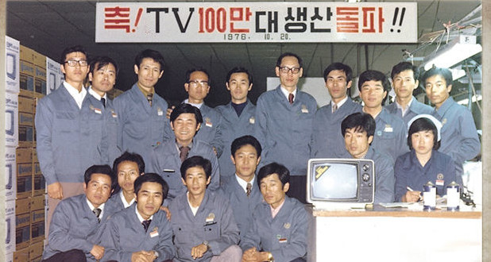
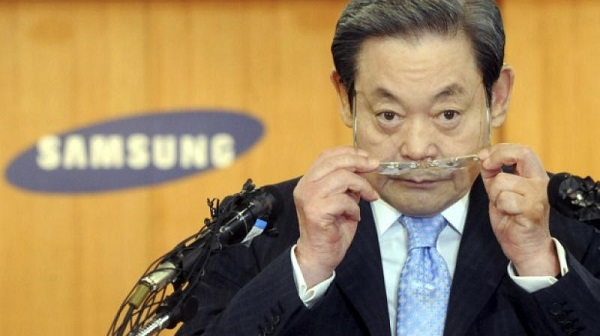

Първото началоЧерно-белият телевизор с 12-инчов на екрана е продуктът, с който компанията стъпва на сцената на електроуредите. По това време този телевизор всъщност бива доста добре приет и в резултат на това компанията насочва вниманието си именно към самостоятелно производство на повече електроника през следващите десетилетия. По-късно през 1986г. те също представят телефон за кола, но за съжаление той не става такъв хит като телевизора. Въпреки това те не се отказват и са продължили да пускат нови устройства на пазара от време на време. |  |
 Лий Кун Хи |
Второто началоТой искал да ръководи компанията на баща си с нова управленска философия, където качеството е в основата на всичко, но въпреки това си желание Samsung продължил да произвежда не толкова качествени продукти. След като забелязва липсата на промяна, един ден през 1995 г. той отива в една от фабриките си и събира на едно всички електронни устройства, произведени там. Той ги унищожил, като някои от тях ги запали, а за други използва чукове. Твърди се, че като цяло той е унищожил продукти на стойност 50 милиона долара в онзи ден, като над 2000 служители на Samsung присъствали и са станали свидетели на това събитието. С това той цел да покаже на своите служители, работещи за него, разбират важността на качеството. Тогава се ражда новият Samsung. Под негово ръководство Samsung израства като една от най-добрите мултинационални компании в света. |